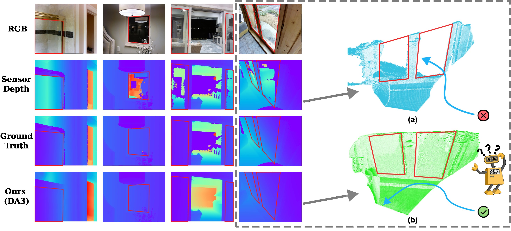
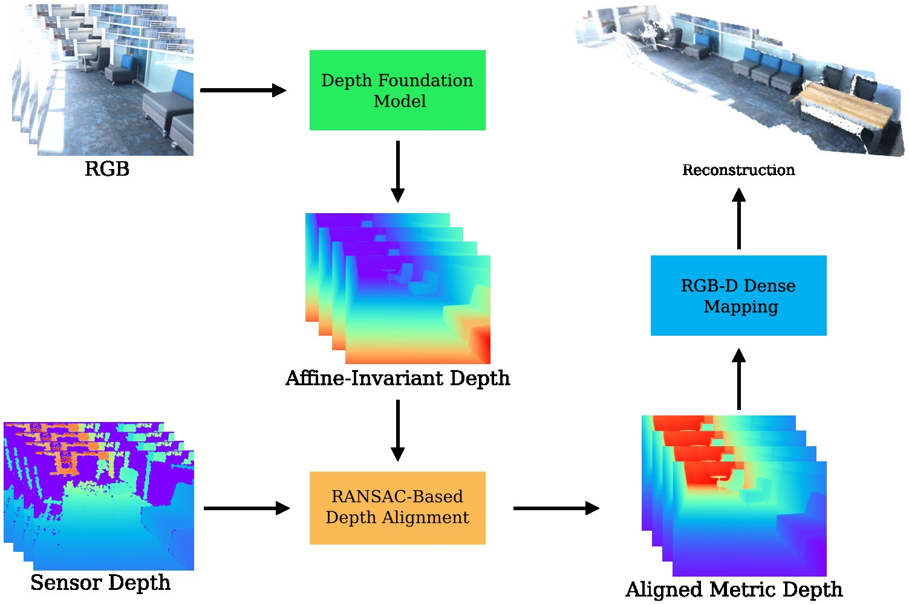
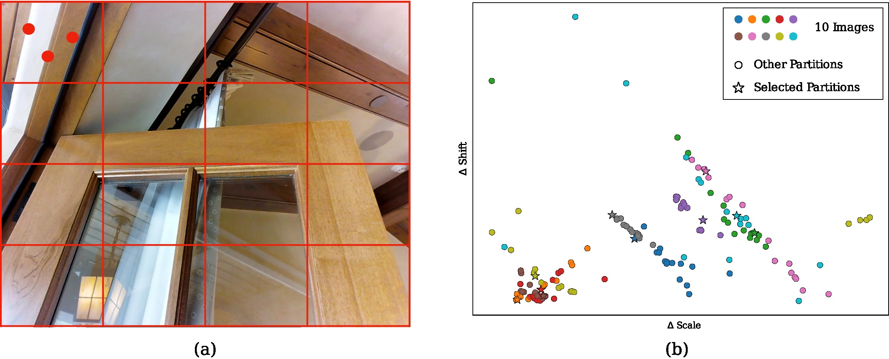
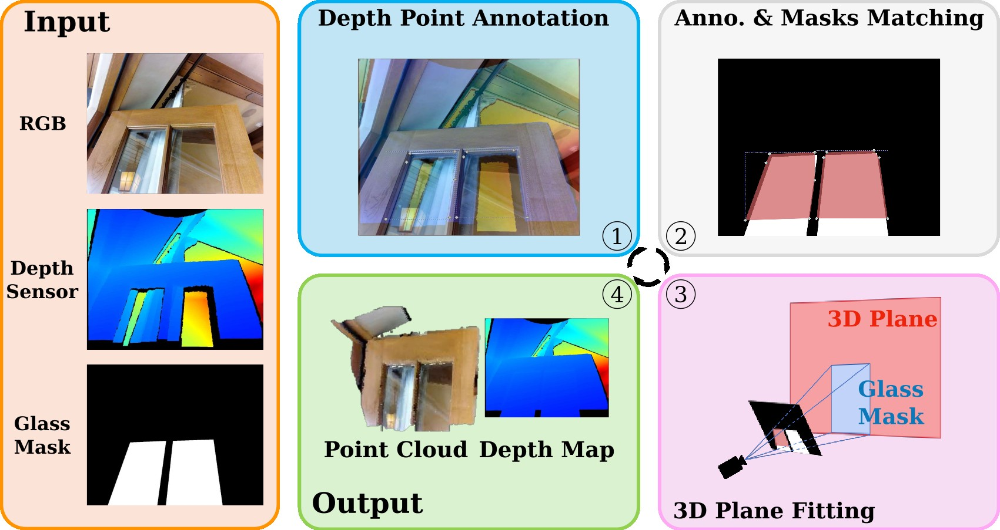
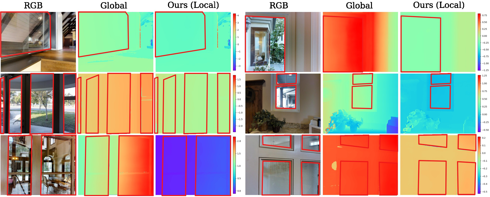
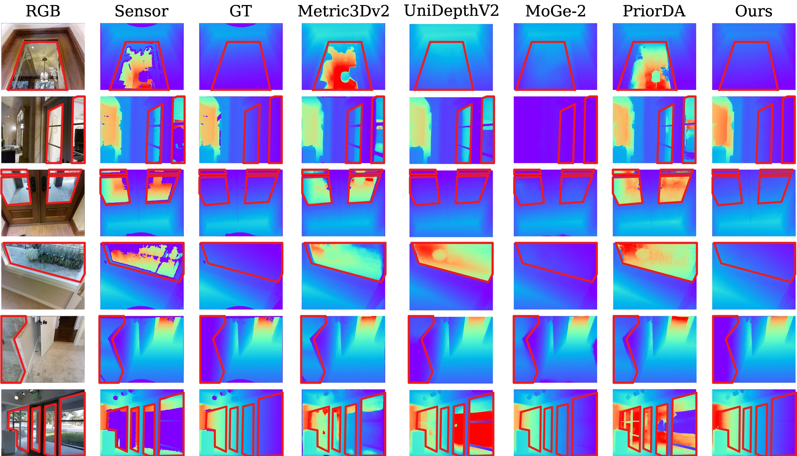
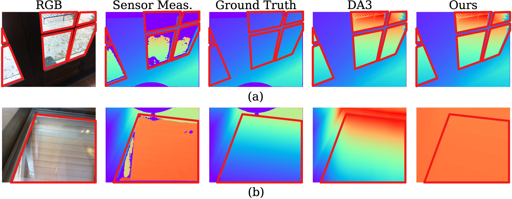

IROS 2026
Enhancing Glass Surface Reconstruction via Depth Prior for Robot Navigation
Shenzhen Key Laboratory of Robotics and Computer Vision, Southern University of Science and Technology, Shenzhen, China
Jingwen Yu is also with the CKS Robotics Institute, Hong Kong University of Science and Technology, Hong Kong SAR, China
*Equal contribution · †Corresponding author

Abstract
Indoor robot navigation is often compromised by glass surfaces, which severely corrupt depth sensor measurements. While foundation models like Depth Anything 3 provide excellent geometric priors, they lack an absolute metric scale.
We propose a training-free framework that leverages depth foundation models as a structural prior, employing a robust local RANSAC-based alignment to fuse it with raw sensor depth. This naturally avoids contamination from erroneous glass measurements and recovers an accurate metric scale. Furthermore, we introduce GlassRecon, a novel RGB-D dataset with geometrically derived ground truth for glass regions. Extensive experiments demonstrate that our approach consistently outperforms state-of-the-art baselines, especially under severe sensor depth corruption. The dataset and related code are available at github.com/jarvisyjw/GlassRecon.
Modular Pipeline
A robust, training-free depth completion method that combines monocular depth priors with local RANSAC alignment.
Benchmark Dataset
The GlassRecon dataset (~1K annotated images) with geometrically derived ground truth and easy / hard splits for standardized benchmarking.
SotA Performance
Our method consistently outperforms global alignment baselines and metric depth prediction networks, with particularly significant gains on hard examples.
Method
Glass surfaces are a particularly hazardous failure case for standard RGB-D sensors, which often produce invalid measurements or incorrectly capture background objects behind the glass. Modern monocular depth foundation models provide powerful structural priors, but they are affine-invariant — they carry no absolute metric scale.
Our pipeline bridges that gap with three stages, requiring no training and no glass-specific network.

Monocular Depth Prior
Any affine-invariant network F predicts a relative depth map Dprior = F(I). It captures detailed scene structure but lacks metric scale and shift. Through exhaustive experiments on GlassRecon we found DA3 best preserves glass geometry while staying generalizable.
Affine Alignment
A global scale s and shift t map the prior to sensor depth, estimated by a RANSAC-based procedure that samples candidates from local image patches and selects the pair minimizing error over the whole image.
Downstream Reconstruction
The aligned depth drops into existing RGB-D pipelines — SLAM, dense mapping, reconstruction — benefiting semantic mapping, obstacle avoidance, and safe navigation where glass would otherwise be misperceived.
Affine depth alignment via local RANSAC
The alignment problem is to find the optimal scale s and shift t minimizing the discrepancy between the prior Dprior = {di} and the raw sensor depth Draw = {d*i}.
In challenging scenarios Draw contains outliers caused by glass surfaces, so directly optimizing this objective fails. We instead adopt a RANSAC-inspired strategy: sample candidate transformations from local image patches and select the one with the smallest error over the entire image. Reliable non-glass regions dominate the total pixel count, so the globally optimal transformation naturally fits those regions well while errors on glass are suppressed.

The image is divided into an N×N grid of patches. For each patch we run K iterations of: randomly select M pixel locations without filtering for glass; compute the least-squares solution for s and t; apply the candidate to the prior and measure the total absolute error over the entire image; and retain the parameter pair yielding the minimal error across all iterations and patches.
Conventional global alignment lets every pixel — including those on glass where sensor depth is invalid or corresponds to background objects — contribute to parameter estimation, biasing scale and shift. Since glass typically occupies a small fraction of the image, randomly selected pixels within a patch are likely to come from reliable non-glass areas, so candidates naturally fit the correct metric depth. Validating each candidate globally then implicitly discards the erroneous glass contributions.
Modularity and generality. The alignment module is entirely decoupled from the choice of depth prior, letting it serve as a versatile front-end for dense SLAM, 3D reconstruction, and visual navigation. As more advanced affine-invariant networks emerge, they can be integrated as plug-and-play components without any algorithmic modification.
The GlassRecon Dataset
We assume most glass structures in indoor environments — windows, glass doors, tabletops — are planar. Images are sourced from Matterport3D, which provides RGB-D data and camera intrinsics, and RGB-D GSD, which contains images with manually labeled glass surfaces selected from Matterport3D.
Based on the RGB-D data and glass masks, we construct the dataset through a multi-step processing pipeline that generates complete depth maps for glass regions. The raw sensor depth map fails to measure glass surfaces accurately, so further annotation is required.

i. Depth Point Annotation
For each glass instance we annotate depth points lying on the same physical plane as the glass. Three or more pixels on reliable regions coplanar with the glass (e.g., points on a window frame) define the true depth of the glass surface.
ii. Annotation & Glass Mask Matching
RGB-D GSD provides a binary mask per glass region. We compute the convex hull of the annotated points and measure its overlap with each mask; the mask with the highest intersection-over-hull ratio is matched to the instance.
iii. 3D Plane Fitting
Sampled 2D coordinates are lifted to 3D by inverse perspective projection using the intrinsics, yielding points Pi. The geometry is modelled by minimizing the algebraic distance nTPi + d = 0 under the unit-norm constraint.
iv. Depth via Ray-Plane Intersection
For every pixel {u,v} inside the glass mask we cast the ray vuv = Kc−1[u,v,1]T and intersect it with the fitted plane. Solving for λuv directly yields metric depth.
The computed depths replace the original values within the glass mask. Where a glass region lacks any depth point annotations, that area is masked and excluded from evaluation. To ensure reliability, each corrected depth map is converted to a 3D point cloud and manually inspected; only images where the glass plane appears geometrically consistent are retained.
The hard subset contains samples with larger glass regions exhibiting significant sensor error. Each image is accompanied by an RGB image, raw sensor depth map, binary glass mask, annotated ground-truth depth, and camera intrinsics.
GlassRecon/
├── images/ # RGB images (PNG)
├── intrinsics/ # JSON files with camera intrinsics & depth scale
├── masks/ # Binary masks for glass regions (PNG)
├── sensor_depths/ # Raw sensor depth maps (PNG)
├── completed_depths/ # Completed depth maps (NPY)
└── evaluation_depths/
├── depths_npy/ # Filtered depth maps (NPY) – glass regions
│ # that could not be completed are masked out
├── depths_vis/ # Visualizations (PNG)
└── pointclouds/ # 3D point clouds (PLY) – back-projected from
# depths_npy using intrinsicsExperimental Results
We evaluate depth accuracy with AbsRel and the accuracy at δ < 1.25, computed over the entire image. The 917 images are partitioned into easy (601, AbsRel ≤ 0.03) and hard (316, AbsRel > 0.03) subsets based on the AbsRel between Draw and DGT.
Comparison with affine-invariant depth methods
Our local RANSAC alignment consistently outperforms the global alignment baseline across almost all networks and subsets, with the most substantial gains on the hard subset. Among the three networks, DA3 achieves the best overall performance when combined with our method, reducing AbsRel on the hard subset by over 46% (0.323 → 0.172).
| Method | Alignment | All | Easy | Hard | |||
|---|---|---|---|---|---|---|---|
| AbsRel ↓ | δ1 ↑ | AbsRel ↓ | δ1 ↑ | AbsRel ↓ | δ1 ↑ | ||
| DAV2 | Global | 0.167 | 0.876 | 0.112 | 0.937 | 0.272 | 0.762 |
| Ours (Local) | 0.158 | 0.906 | 0.100 | 0.936 | 0.269 | 0.849 | |
| MoGe | Global | 0.166 | 0.874 | 0.059 | 0.963 | 0.369 | 0.703 |
| Ours (Local) | 0.142 | 0.904 | 0.055 | 0.964 | 0.309 | 0.790 | |
| DA3 | Global | 0.152 | 0.855 | 0.061 | 0.962 | 0.323 | 0.651 |
| Ours (Local) | 0.095 | 0.937 | 0.055 | 0.966 | 0.172 | 0.883 | |

Comparison with metric depth methods
Using DA3 as the depth prior, our method achieves the best overall performance with significant improvement on the hard split. On the easy subset it remains competitive with PriorDA, which is designed to refine raw sensor depth without accounting for potential measurement corruption. From the visualization of selective hard-subset samples, PriorDA remains anchored to the input sensor depth and fails to recover the true glass geometry, while Metric3Dv2 and UniDepthV2 similarly struggle. MoGe-2 achieves more plausible geometry but suffers from frequent depth scale misalignment.
| Method | Variant | All | Easy | Hard | |||
|---|---|---|---|---|---|---|---|
| AbsRel ↓ | δ1 ↑ | AbsRel ↓ | δ1 ↑ | AbsRel ↓ | δ1 ↑ | ||
| Metric3Dv2 | w/o intrin. | 0.245 | 0.834 | 0.168 | 0.897 | 0.390 | 0.713 |
| w/ intrin. | 0.258 | 0.819 | 0.167 | 0.887 | 0.432 | 0.690 | |
| UniDepthV2 | w/o intrin. | 0.305 | 0.804 | 0.204 | 0.865 | 0.496 | 0.687 |
| w/ intrin. | 0.309 | 0.808 | 0.204 | 0.872 | 0.509 | 0.686 | |
| MoGe-2 | — | 0.240 | 0.540 | 0.229 | 0.548 | 0.262 | 0.524 |
| PriorDA | w/o geom. | 0.158 | 0.886 | 0.037 | 0.970 | 0.387 | 0.726 |
| w/ geom. | 0.155 | 0.887 | 0.037 | 0.972 | 0.381 | 0.724 | |
| Ours (+ DA3) | 0.095 | 0.937 | 0.055 | 0.966 | 0.172 | 0.883 | |

Limitations & Failure Cases
Despite its effectiveness on the majority of glass surfaces, two primary scenarios still pose challenges.
(a) Limitations of the depth prior
Our approach scales the output of the depth prediction network to improve glass reconstruction. If the prior itself fails to predict glass geometry — for example, estimating the depth of background objects behind the glass instead of the glass surface — our method fails. This highlights the dependence on the quality of the underlying depth prior; emerging developments in DFMs would seamlessly benefit the framework.
(b) Corruption from erroneous sensor depth
Robustness stems from the assumption that randomly sampled pixels are mainly from regions where sensor depth is reliable. When the sensor returns erroneous but valid depth over a glass surface occupying most of the image, those corrupted pixels dominate the global error minimization, biasing scale and shift toward fitting the incorrect measurements.

One potential improvement is to modify the global error minimization to better handle dominant erroneous depths — for example by introducing per-pixel weighting or a revised validation strategy. Incorporating uncertainty estimation into the alignment process could likewise improve robustness by adaptively weighting pixels based on their reliability. We leave these directions for future work.
Citation
If you find our work useful, please cite:
@article{zheng2026enhancing,
title={Enhancing Glass Surface Reconstruction via Depth Prior for Robot Navigation},
author={Zheng, Jiamin and Yu, Jingwen and Chen, Guangcheng and Zhang, Hong},
journal={arXiv preprint arXiv:2604.18336},
year={2026}
}